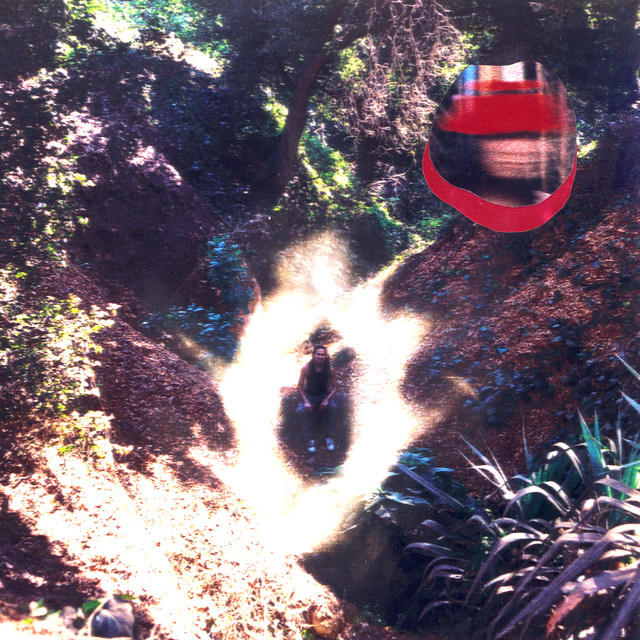
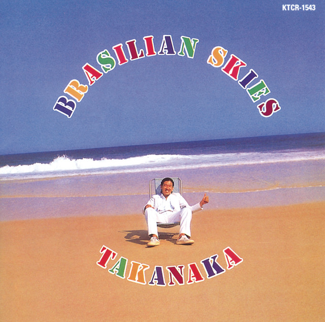
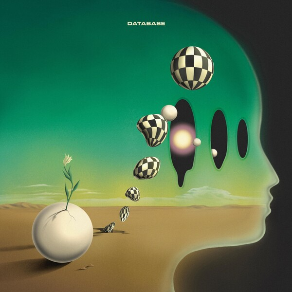

I'm a guitarist of 13 years. I enjoy studying the styles of Ted Greene, Joe Pass, and Masayoshi Takanaka.
You can view my work on my
music channel. My main ax is a Sweedish-made Strandberg Sälen Jazz NX. I am very comfortable with Abelton 11 and I take
my music-listening
seriously. Please reach out to coreypredella@gmail.com for gigs. Yes, I can read music.

1. Intergalactic Warp Terminal 222 - Lionmilk

2. Brasilian Skies - Masayoshi Takanaka

3. Database - Daniel Hayn, Israel Strom, Noah Denton